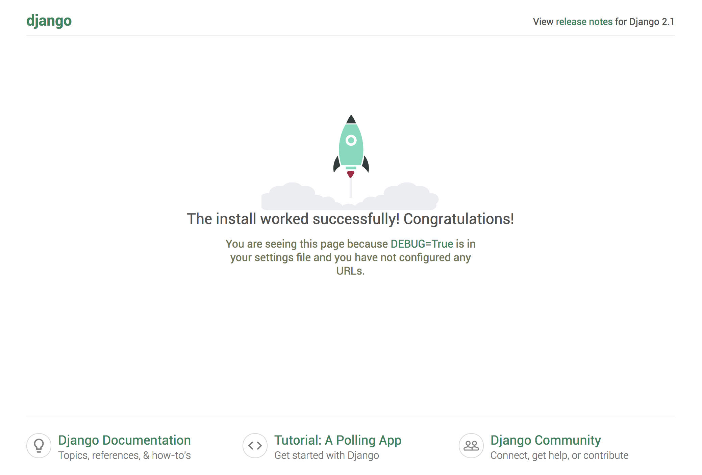
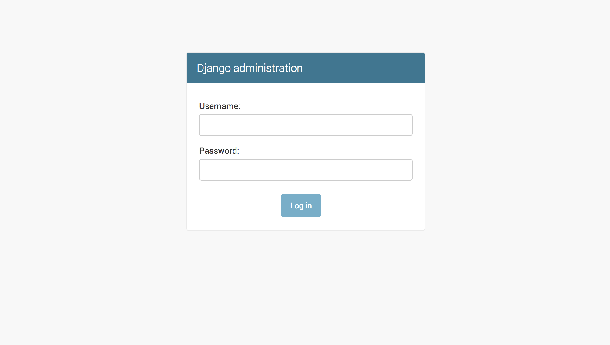
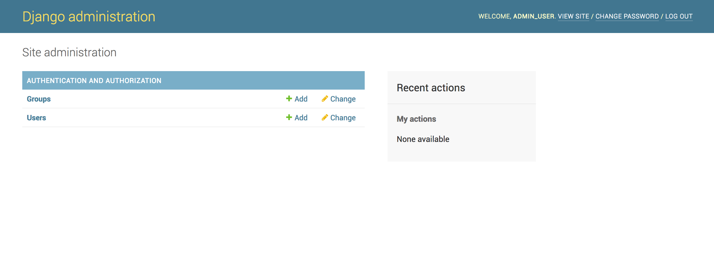

Django_virtual
Установка веб-фреймворка Django в Ubuntu 18.04 UbuntuDjangoPython FrameworksUbuntu 18.04
Django — это полноценный веб-фреймворк, написанный на Python и предназначенный для разработки динамических веб-сайтов и приложений. Используя Django, вы сможете быстро создать веб-приложения на Python и выполнить большую часть сложной работы с помощью фреймфорка.
В этом руководстве вы настроите и запустите Django на сервере Ubuntu 18.04. После установки вы начнете новый проект, который будет использован в качестве основы для вашего сайта.
Существуют разные способы установки Django в зависимости от ваших потребностей и того, как вы хотите настроить среду разработки. Методы обладают разными преимуществами, и какой-то конкретный метод может лучше подходить для вашей конкретной ситуации, чем другие.
Ниже представлены некоторые из этих методов:
Перед началом установки у вас должен быть пользователь без прав root с привилегиями sudo на сервере Ubuntu 18.04. Для настройки такой системы следуйте нашему руководству по начальной настройке сервера Ubuntu 18.04.
Глобальная установка из пакетов
Если вы хотите установить Django, используя репозитории Ubuntu, процесс установки не вызовет никаких сложностей.
Во-первых, обновите локальный индекс пакетов с помощью apt:
Затем необходимо проверить, какую версию Python вы установили. С версией 18.04 по умолчанию поставляется Python 3.6, а вы можете проверить это с помощью следующей команды:
Результат должен выглядеть следующим образом:
OutputPython 3.6.5
Затем установите установку Django:
Вы можете проверить, что установка выполнена успешно, введя следующую команду:
Output1.11.11
Это означает, что программное обеспечение было успешно установлено. Также вы можете заметить, что установленная версия Django не является последней стабильной версией. Чтобы узнать больше о том, как использовать программное обеспечение, пропустите дальнейшую информацию и перейдите к разделу о том, как создать образец проекта.
Установка с помощью pip в виртуальной среде
Наиболее гибкий метод установки Django в вашей системе — использование виртуальной среды. Мы покажем, как установить Django в виртуальной среде, которую мы создадим с помощью модуля venv, который является частью стандартной библиотеки Python 3. Этот инструмент позволяет создавать виртуальную среду Python и устанавливать пакеты Python без какого-либо воздействия на остальные элементы системы. Таким образом, вы сможете выбирать пакеты Python согласно нуждам отдельного проекта, не обращая внимание на возможные конфликты с требованиями других проектов.
Давайте начнем с обновления локального индекса пакетов:
Проверьте установленную версию Python:
OutputPython 3.6.5
Затем мы установим pip из репозиториев Ubuntu:
После установки pip вы сможете использовать его для установки пакета venv:
Теперь при запуске нового проекта вы сможете создать для него виртуальную среду. Для этого нужно создать и перейти к созданной директории проекта:
Затем создайте виртуальную среду в директории проекта, используя команду python, совместимую с вашей версией Python. Мы назовем нашу виртуальную среду my_env, но вы должны дать ей какое-то понятное название:
В результате должны быть установлены отдельные версии Python и pip в изолированную структуру директорий внутри директории вашего проекта. Будет создана директория с выбранным вами именем, в которой будет храниться иерархия файлов, где будут установлены ваши пакеты.
Чтобы установить пакеты в изолированную среду, вы должны активировать ее с помощью следующей команды:
Ваше командная строка должна измениться, отражая переход в виртуальную среду. Он будет выглядеть примерно так: (my_env)username@hostname:~/newproject$.
В новой среде вы сможете использовать pip для установки Django. Независимо от используемой вами версии Python pip должен называть только pip, когда вы находитесь в виртуальной среде. Также необходимо отметить, что вы не должны использовать sudo, поскольку вы выполняете установку локально:
Для проверки установки введите:
Output2.1
Обратите внимание, что ваша версия может отличаться от представленной здесь версии.
Чтобы покинуть вашу виртуальную среду, вам нужно воспользоваться командой deactivate из любого места в системе:
Ваша командная строка должна вернуться к обычному отображению. Когда вы захотите продолжить работу над вашим проектом, перезапустите свою виртуальную среду, перейдя в директорию проекта и выполните активацию:
Установка версии для разработчиков с помощью Git
Если вам потребуется версия Django для разработчиков, вы можете скачать и установить Django из репозитория в Git. Давайте сделаем это в виртуальной среде.
Во-первых, давайте обновим локальный индекс пакетов:
Проверьте установленную версию Python:
OutputPython 3.6.5
Затем устанddовите pip из официальных репозиториев:
Установите пакет venv, чтобы создать свою виртуальную среду:
Следующий шаг — клонирование репозитория Django. В период между релизами этот репозиторий содержит более современные функции и исправления с максимально возможной стабильностью. Вы можете клонировать репозиторий в каталог с названием ~/django-dev внутри домашнего каталога, введя следующую команду:
Перейдите в эту директорию:
Создайте виртуальную среду, используя команду python, совместимую с установленной версией Python:
Активируйте ее:
Затем вы сможете установить репозиторий с помощью pip. Вариант -e будет установлена в режим с разрешением редактирования, что необходимо при установке с помощью системы управления версиями:
Вы можете убедиться, что установка выполнена успешно, введя следующую команду:
Output2.2.dev20180802155335
Как отмечалось выше, отображаемая версия может не соответствовать показанной здесь.
Теперь у вас есть последняя версия Django в вашей виртуальной среде.
После установки Django вы сможете начать создание вашего проекта. Сейчас мы изучим процесс создания проекта и протестируем его на вашем сервере для разработки, используя виртуальную среду.
Во-первых, создайте директорию для вашего проекта и измените ее с помощью следующей команды:
Затем создайте свою виртуальную среду:
Активируйте среду:
Установите Django:
Для создания вашего проекта вы можете использовать django-admin с командой startproject. Мы назовем наш проект djangoproject, но вы можете задать собственное имя. startproject создаст внутри текущего рабочего каталога подкаталог, включающий следующее:
Чтобы избежать использования слишком большого количества вложенных директорий, нужно указать для Django размещение скрипта управления и внутренней директории в текущей директории (обратите внимание на точку в конце):
Чтобы выполнить миграцию базы данных (этот пример использует SQLite по умолчанию), воспользуемся командой migrate и manage.py. При миграции применяются все изменения, внесенные в ваши модели Django, для схемы вашей базы данных.
Чтобы выполнить миграцию базы данных, введите:
Вы увидите следующий результат:
OutputOperations to perform:
Apply all migrations: admin, auth, contenttypes, sessions
Running migrations:
Applying contenttypes.0001_initial... OK
Applying auth.0001_initial... OK
Applying admin.0001_initial... OK
Applying admin.0002_logentry_remove_auto_add... OK
Applying admin.0003_logentry_add_action_flag_choices... OK
Applying contenttypes.0002_remove_content_type_name... OK
Applying auth.0002_alter_permission_name_max_length... OK
Applying auth.0003_alter_user_email_max_length... OK
Applying auth.0004_alter_user_username_opts... OK
Applying auth.0005_alter_user_last_login_null... OK
Applying auth.0006_require_contenttypes_0002... OK
Applying auth.0007_alter_validators_add_error_messages... OK
Applying auth.0008_alter_user_username_max_length... OK
Applying auth.0009_alter_user_last_name_max_length... OK
Applying sessions.0001_initial... OK
В заключение мы создадим административного пользователя, чтобы вы могли использовать интерфейс администратора Django. Давайте сделаем это с помощью команды createsuperuser:
Вам будет предложено ввести имя пользователя, адрес электронной почты и пароль вашего пользователя.
Изменение ALLOWED_HOSTS в настройках Django
Чтобы успешно протестировать ваше приложение, вам нужно будет изменить одну из директив в настройках Django.
Откройте файл настроек, введя следующую команду:
Внутри файла найдите директиву ALLOWED_HOSTS. Она определяет список разрешенных адресов или доменных имен, которые могут быть использованы для подключения к экземпляру Django. Входящий запрос с заголовком Host, не включенный в этот список, будет вызывать исключение. Django требует, чтобы вы использовали эту настройку, чтобы предотвратить использование определенного класса уязвимости безопасности.
В квадратных скобках перечислите IP-адреса или доменные имена, связанные с вашим сервером Django. Каждый элемент должен быть указан скобках, а отдельные записи разделяются запятой. Если вы хотите добавить весь домен и любые поддомены, добавьте точку перед началом записи:
~/django-test/djangoproject/settings.py
. . .
ALLOWED_HOSTS = ['your_server_ip_or_domain', 'your_second_ip_or_domain', . . .]
После завершения редактирования сохраните файл и закройте редактор.
Тестирование сервера для разработки
Если у вас есть пользователь, вы сможете запустить сервер для разработки Django, чтобы узнать, как выглядит новый проект Django. Вы должны использовать это только для разработки. Когда вы будете готовы к развертыванию, вы должны тщательно следовать инструкциям руководства Django по развертыванию.
Прежде чем начать работу с сервером для разработки, убедитесь, что вы открыли соответствующий порт в брандмауэре. Если вы выполнили руководство по начальной настройке сервера и используете UFW, вы можете открыть порт 8000 с помощью следующей команды:
Запустите сервер разработки:
Откройте в браузере IP-адрес вашего сервера с суффиксом :8000:
http://your_server_ip:8000
Вы должны увидеть примерно следующее:

Чтобы получить доступ к интерфейсу администратора, добавьте /admin/ в конец URL:
http://your_server_ip:8000/admin/
В этом случае вы увидите экран для входа:

При вводе имени администратора и пароля, которые вы только что создали, вы получите доступ к основному административному разделу сайта:

Дополнительную информацию о работе с интерфейсом администратора Django можно найти в статье «Активация и подключение интерфейса администратора Django».
После завершения просмотра сайта по умолчанию вы можете остановить работу сервера разработки, введя CTRL-C в терминале.
Созданный вами проект Django обеспечивает структурную основу для разработки более сложного сайта. См. в документации Django, чтобы получить больше информации о создании приложений и настройке сайта.
Вы установили Django на сервер Ubuntu 18.04, а также предоставили основные инструменты, которые вам потребуются для создания мощных веб-приложений. Также теперь вы должны знать, как создать новый проект и запустить сервер для разработки. Использование такого мощного веб-фреймворка,как Django, может ускорить процесс разработки, а также сосредоточить внимание исключительно на уникальных аспектах ваших приложений.
Если вы хотите получить больше информации о работе с Django, включая подробные обсуждения таких вещей как модели и представления, ознакомьтесь с нашей серией материалов о разработке с Django.